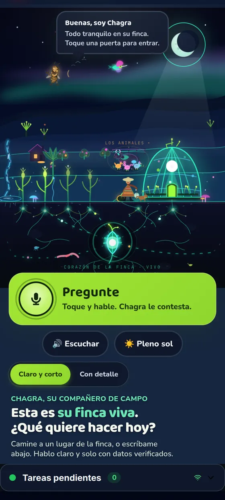
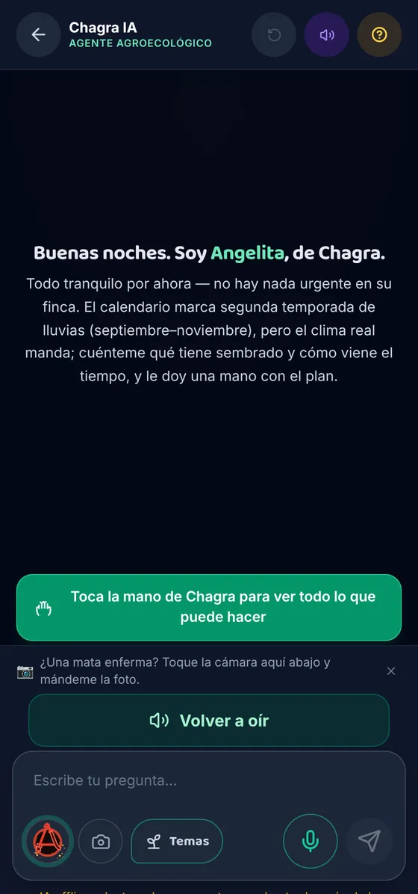
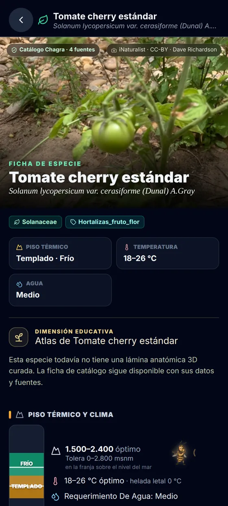
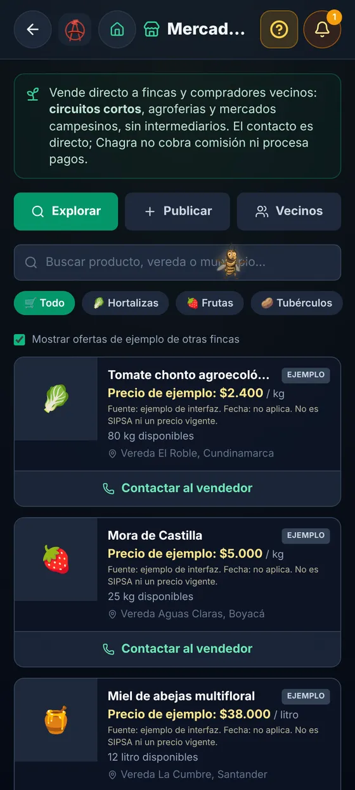
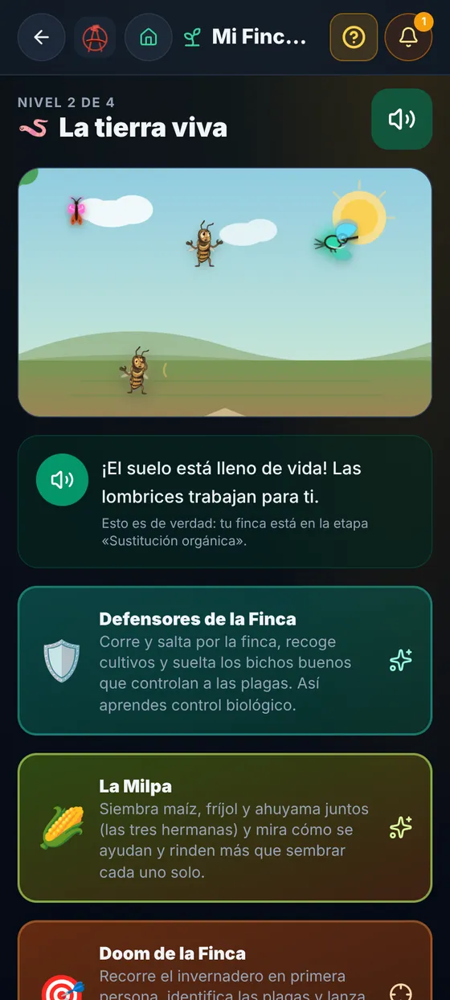
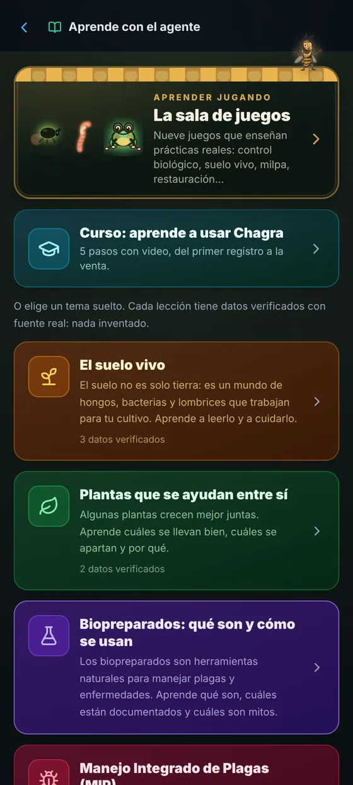

La app, por dentro
Así se ve Chagra en el celular
Capturas reales de chagra.app, tomadas el 23 de septiembre en un teléfono con la finca de ejemplo. Nada de maquetas.
Deslice para pasar de pantalla.






Aprender · gratis
Tres puertas para empezar
Chagra enseña lo que sabe con la misma regla con que responde: cada afirmación trae su fuente, y lo que es ilustrativo se dice ilustrativo.
De la finca a la célula
Piezas que bajan de lo que usted ve en la finca hasta lo que pasa dentro de la célula, y cursos para el trabajo de cada día. Todo en una sola toma y con ciencia citada.
Aprenda a usar Chagra
Del primer registro a la venta, con videos cortos que se ven como en su celular y enlaces para probar cada paso en la app.
- Empiece su finca
- Conozca su suelo y sus matas
- Cuide sin veneno
- Asocie y aproveche
- Coseche y venda
- Listo para su finca de verdad
Primeros pasos en agroecología
Introducción a Chagra, biopreparados básicos y manejo ecológico de plagas, en trece lecciones cortas.
Ver el mini-curso →Del 15-15-15 a la agroecología
Qué trae el bulto, qué le pasa en la tierra y qué dice la ciencia de pasarse a lo orgánico, con la fuente de cada cifra.
Leer → Salud · bioseguridadBioseguridad en el campo
Plaguicidas y cuerpo, equipo de protección mínimo, y los riesgos que también tienen algunos biopreparados.
Abrir la unidad → Todas las notasNotas técnicas del campo
Primero en lenguaje simple, después con la evidencia revisada por pares.
Ir a Aprender →La app, hoy
Lo que Chagra ya hace
Una app web que se instala en el celular y sigue funcionando sin señal. Cuando vuelve la conexión, sincroniza con el servidor propio de Chagra.
Preguntar
Por texto, por voz o con una foto de la mata o de la plaga. Antes de responder consulta el catálogo y muestra la fuente.
Llevar la finca
Plantas, animales, zonas, tareas y bitácora, también por voz. Exporta un informe ordenado, útil para la certificación orgánica.
Conocer las especies
Una ficha por especie con piso térmico, asociaciones, plagas y biopreparados, y un calendario de siembra, nutrición y cosecha.
Leer el clima
Alertas de heladas, sequías y fenómeno de El Niño según el piso térmico de su finca, con datos públicos del IDEAM.
Restaurar y cuidar
Especies nativas para restaurar según la altura y la sucesión, y una guía de campo para reportar el estado de un glaciar.
Vender y protegerse
Publicar la cosecha para compradores locales, consultar precios, y entender los pagos por servicios ambientales antes de firmar un contrato de bonos de carbono.
Dónde corre y qué tan verificado está
Las cuentas claras
Estas son las cifras del grafo que usa el agente, medidas una por una. El catálogo está en revisión: la mayoría de las fichas todavía no tiene validación agronómica externa, y así lo decimos.
Servidor propio, con el sol
El agente y la visión por computador corren en un servidor de Chagra en Choachí, Cundinamarca, alimentado con energía solar fuera de la red. Sus preguntas y sus fotos van a ese servidor, no a una nube de terceros.
Modelos abiertos, código abierto
Modelos de lenguaje abiertos y locales, y todo el código bajo licencia AGPL-3.0, auditable en GitHub. Los datos de la finca se guardan en farmOS, un sistema libre de registros agrícolas.
Si no sabe, lo dice
El agente responde anclado al catálogo. Cuando el dato no está, lo dice en vez de inventarlo; nunca recomienda dosis peligrosas ni mezclas tóxicas.
Sin señal también
La app guarda lo que usted registra en el celular y lo envía cuando vuelve la conexión. En la finca, sin internet, sigue sirviendo.
El ejemplo del comienzo, con su respaldo
- Vet, L. E. M., van Lenteren, J. C. y Woets, J. (1980). The parasite-host relationship between Encarsia formosa (Hymenoptera: Aphelinidae) and Trialeurodes vaporariorum (Homoptera: Aleyrodidae). Zeitschrift für Angewandte Entomologie, 90, 26–51. doi:10.1111/j.1439-0418.1980.tb03499.x
- Quesada-Moraga, E., Maranhao, E. A. A., Valverde-García, P. y Santiago-Álvarez, C. (2006). Selection of Beauveria bassiana isolates for control of the whiteflies Bemisia tabaci and Trialeurodes vaporariorum on the basis of their virulence, thermal requirements, and toxicogenic activity. Biological Control, 36, 274–287. doi:10.1016/j.biocontrol.2005.09.022
Medido en el grafo AGE de Chagra el 23-sep-2026 a las 03:05. «Relaciones» cuenta la capa colombiana; no incluye registros técnicos internos.
Para quién
Hecha para quien siembra
Campesinas y campesinos
Para quien cultiva poca tierra para su familia y el mercado de su pueblo, y sabe de la tierra más que cualquier libro. Gratis, en su idioma y sin señal.
Técnicos y extensionistas
Para quien acompaña procesos en el territorio y necesita validar especies, sugerir biopreparados y registrar observaciones con respaldo.
Cooperativas e instituciones
Para organizaciones que quieran usar o cofinanciar Chagra en sus territorios: registro de campo exportable, restauración por piso térmico y monitoreo participativo.

Miguel Guerrero
Desarrollador · agroecólogo aficionado
Construye Chagra desde Guatoc, en Choachí, Cundinamarca, en la vertiente oriental de la cordillera Oriental. Sin inversionistas de riesgo ni aceleradoras: un propósito, que el campesino colombiano tenga herramientas digitales que lo respeten.
Escríbanos